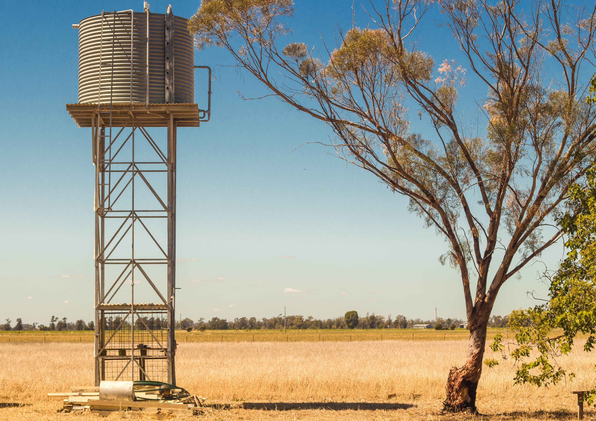
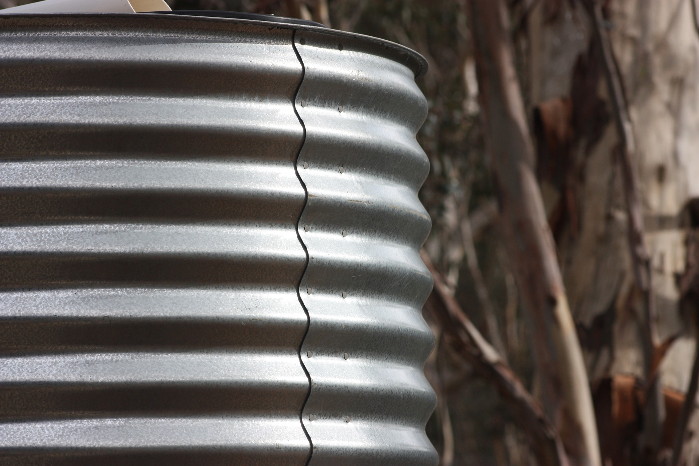

Rainwater tanks are a very useful way of collecting clean rainwater. The problem lies that sometimes, the rainwater is not used efficiently or worse, not used at all. Getting rainwater via rainwater tanks is a whole lot easier than collecting water from water systems and then getting it filtered, through the drains and so on.
Most of the water comes from water systems via drains which is then filtered. This is not eco-friendly as we have to change the environment around us even further. Whereas with the rainwater tanks, we can insert them at any particular location at any particular time.
AimWe decided to make a system to detect how efficiently you are using your rainwater tanks. It will measure not only the quality of the water but also how efficiently you are using the rainwater in the rainwater tank. |
 |
AimWe decided to make a system to detect how efficiently you are using your rainwater tanks. It will measure not only the quality of the water but also how efficiently you are using the rainwater in the rainwater tank. |
|  |
Design and ImplementationThe system will use sensors to measure, as mentioned above, the quality of the water and how efficiently you are using it. This will all be shown in an application which you can use to view daily graphs showing you rainwater usage. |
Design and ImplementationThe system will use sensors to measure, as mentioned above, the quality of the water and how efficiently you are using it. This will all be shown in an application which you can use to view daily graphs showing you rainwater usage. |